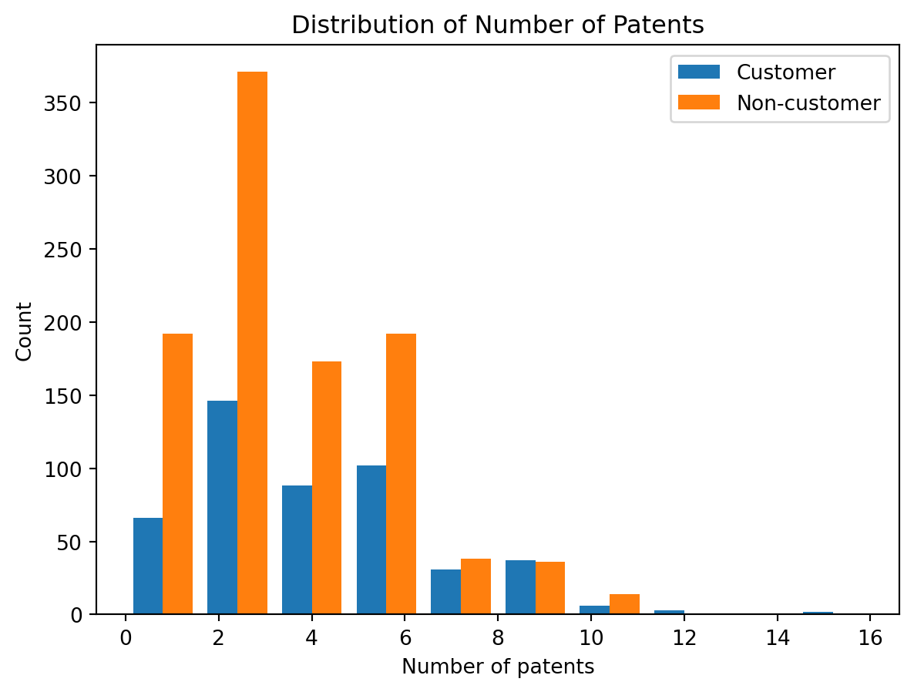
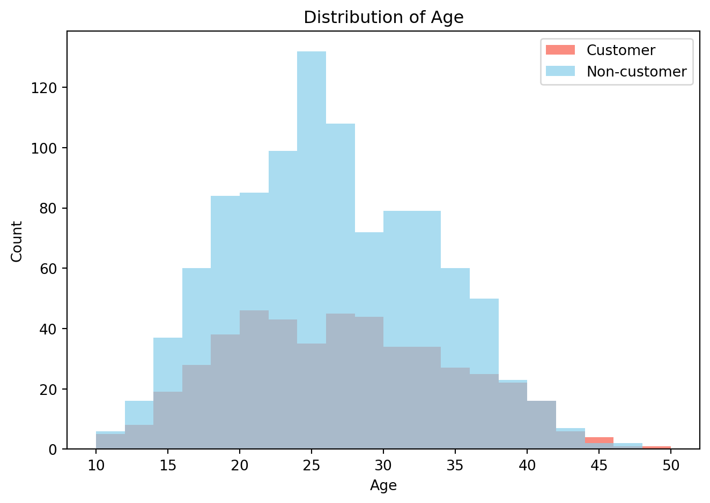
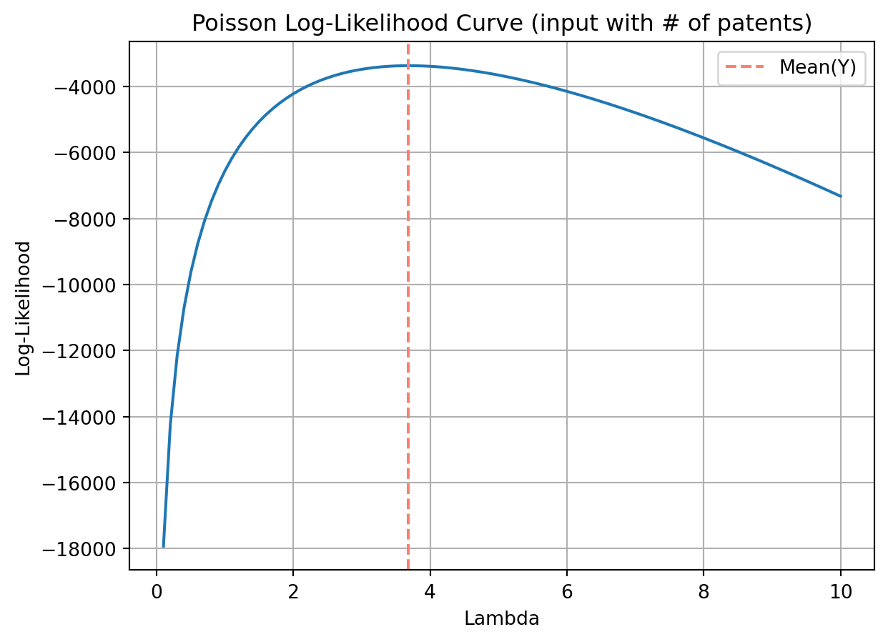
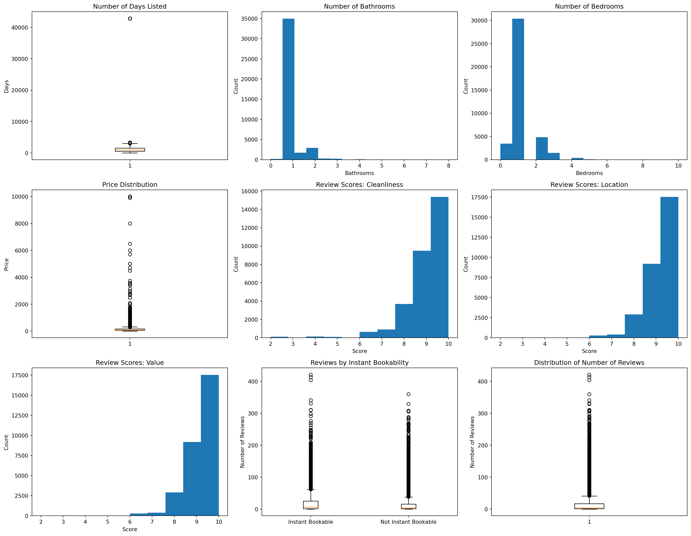

Blueprinty is a small firm that makes software for developing blueprints specifically for submitting patent applications to the US patent office. Their marketing team would like to make the claim that patent applicants using Blueprinty’s software are more successful in getting their patent applications approved. Ideal data to study such an effect might include the success rate of patent applications before using Blueprinty’s software and after using it. Unfortunately, such data is not available.
However, Blueprinty has collected data on 1,500 mature (non-startup) engineering firms. The data include each firm’s number of patents awarded over the last 5 years, regional location, age since incorporation, and whether or not the firm uses Blueprinty’s software. The marketing team would like to use this data to make the claim that firms using Blueprinty’s software are more successful in getting their patent applications approved.
Data
Code
import numpy as npimport pandas as pdimport matplotlib.pyplot as pltdata = pd.read_csv("../../data/blueprinty.csv")print(f"The dataset contains: {data.shape[0]:,} rows")data.head(3)
The dataset contains: 1,500 rows
patents
region
age
iscustomer
0
0
Midwest
32.5
0
1
3
Southwest
37.5
0
2
4
Northwest
27.0
1
The dataset involves 1,500 rows(engineering firms), with 4 columns.
The histogram compares the distribution of the number of patents of customers and non-customers
We observe that Blueprinty customers tend to hold more patents on average compared to non-customers.
Code
plt.hist( [data.query("iscustomer==1")["patents"], data.query("iscustomer==0")["patents"]])plt.title("Distribution of Number of Patents")plt.xlabel("Number of patents")plt.ylabel("Count")labels = ["Customer", "Non-customer"]plt.legend(labels)mean_customer_patent = data.query("iscustomer==1")["patents"].mean()mean_noncustomer_patent = data.query("iscustomer==0")["patents"].mean()print(f"Means of number of patents of customers: {mean_customer_patent:.2f}")print(f"Means of number of patents of non-customers: {mean_noncustomer_patent:.2f}")
Means of number of patents of customers: 4.13
Means of number of patents of non-customers: 3.47

The mean number of patents among customers is 4.13, while for non-customers it is 3.47.
The distribution for non-customers is more concentrated around 2–3 patents, whereas customers show a heavier tail, indicating that a greater proportion of them hold higher numbers of patents.
There are also more customers with patent counts above 6 compared to non-customers.
These findings suggest that Blueprinty customers are more likely to be high-output or more innovation-active entities. This could imply that the company is either targeting or attracting organizations with greater innovative capacity.
Blueprinty customers are not selected at random. It may be important to account for systematic differences in the age and regional location of customers vs non-customers.
The bar chart shows the geographic distribution of Blueprinty customers and non-customers across five U.S. regions
Northeast has the largest customer base: It has the highest count of customers and more customers than non-customers in this region, suggesting that Blueprinty has strong market penetration there.
Overall, non-customers are a lot more than customers in every other region: The Northwest, South, Southwest, and Midwest all have significantly more non-customers than customers, showing high market potential.
These results imply that Blueprinty’s customer acquisition is highly regionally skewed, particularly concentrated in the Northeast. This could be due to marketing focus, proximity to headquarters, existing network effects, or simply regional product-market fit.
The histogram illustrates the age distribution of Blueprinty customers and non-customers
The mean age for customers is 26.90, slightly higher than the 26.10 average for non-customers.
Code
customer_age = data.query("iscustomer==1")["age"]noncustomer_age = data.query("iscustomer==0")["age"]bins = np.arange(10, 51, 2)plt.hist(customer_age, bins=bins, alpha=0.9, label="Customer", color="salmon")plt.hist(noncustomer_age, bins=bins, alpha=0.7, label="Non-customer", color="skyblue")plt.title("Distribution of Age")plt.xlabel("Age")plt.ylabel("Count")plt.legend()mean_customer_age = customer_age.mean()mean_noncustomer_age = noncustomer_age.mean()print(f"Mean age of customers: {mean_customer_age:.2f}")print(f"Mean age of non-customers: {mean_noncustomer_age:.2f}")plt.tight_layout()plt.show()
Mean age of customers: 26.90
Mean age of non-customers: 26.10

The overall distributions are quite similar, with both groups peaking around ages 20 to 30.
However, non-customers are more concentrated in the 18–30 age range, especially at the peak (age ~25).
Customers have a slightly broader spread, with a relatively higher proportion in the 30–45 age range.
This suggests that while the average age is similar, Blueprinty customers may skew marginally older, potentially indicating different needs, purchasing power, or product fit among slightly older users.
Estimation of Simple Poisson Model
Since our outcome variable of interest can only be small integer values per a set unit of time, we can use a Poisson density to model the number of patents awarded to each engineering firm over the last 5 years. We start by estimating a simple Poisson model via Maximum Likelihood.
Mathematical function for the likelihood (or log-likelihood)
Code for the likelihood (or log-likelihood) function for the Poisson model
from scipy.special import gammalndef poisson_loglikelihood(l, Y): log_likelihood = np.sum(-l + Y * np.log(l) - gammaln(Y +1))return log_likelihood
Code
Y = data["patents"]lambdas = np.linspace(0.1, 10, 100)log_likelihoods = [poisson_loglikelihood(l, Y) for l in lambdas]plt.plot(lambdas, log_likelihoods)plt.xlabel("Lambda")plt.ylabel("Log-Likelihood")plt.title("Poisson Log-Likelihood Curve (input with # of patents)")plt.axvline(np.mean(Y), color="salmon", linestyle="--", label="Mean(Y)")plt.legend()plt.grid(True)plt.show()

When taking the first derivative of the likelihood or log-likelihood function, set it equal to zero, and solve for lambda.
Next, we extend our simple Poisson model to a Poisson Regression Model such that \(Y_i = \text{Poisson}(\lambda_i)\) where \(\lambda_i = \exp(X_i'\beta)\). The interpretation is that the success rate of patent awards is not constant across all firms (\(\lambda\)) but rather is a function of firm characteristics \(X_i\). Specifically, we will use the covariates age, age squared, region, and whether the firm is a customer of Blueprinty.
def poisson_loglikelihood2(beta, Y, X): lambda_i = np.exp(X @ beta)return np.sum(Y * np.log(lambda_i) - lambda_i - gammaln(Y +1))def neg_loglikelihood2(beta, Y, X):return-poisson_loglikelihood2(beta, Y, X)
Then, I can get the MLE vector and the Hessian of the Poisson model with covariates. The first column of X should is 1s to enable a constant term in the model, and the subsequent columns are age, age squared, binary variables for all but one of the regions, and the binary customer variable.
The Poisson regression results indicate that age and customer statusare statistically significant predictors of the number of patents among engineering firms, based on the p-values (P >| z|). Moreover, the relationship between age and patent count follows a concave shape, suggesting that innovation returns initially increase with firm age but begin to decline after reaching a peak.
Additionally, Blueprinty customers are estimated to produce approximately 23% (\(e^{0.208} - 1 \approx 23.1\%\)) more patents than non-customers, when all other features remain the same. Regional differences do not appear to have a statistically significant impact on patent production.
To conclude about the effect of Blueprinty’s software on patent success, I calculated the counterfactual prediction.
Code
iscust_idx =list(X_data.columns).index("iscustomer")X_0 = X.copy()X_1 = X.copy()X_0[:, iscust_idx] =0X_1[:, iscust_idx] =1y_pred_0 = np.exp(X_0 @ beta_hat)y_pred_1 = np.exp(X_1 @ beta_hat)delta = y_pred_1 - y_pred_0avg_diff = delta.mean()print(f"Average increase in expected number of patents due to being a Blueprinty customer: {avg_diff:.2f}")
Average increase in expected number of patents due to being a Blueprinty customer: 0.79
Based on the Poisson regression model, being a Blueprinty customer increases the expected number of patents by approximately 0.79 patents per firm, making all other features constant.
AirBnB Case Study
Introduction
AirBnB is a popular platform for booking short-term rentals. In March 2017, students Annika Awad, Evan Lebo, and Anna Linden scraped of 40,000 Airbnb listings from New York City. The data include the following variables:
Variable Definitions
- `id` = unique ID number for each unit
- `last_scraped` = date when information scraped
- `host_since` = date when host first listed the unit on Airbnb
- `days` = `last_scraped` - `host_since` = number of days the unit has been listed
- `room_type` = Entire home/apt., Private room, or Shared room
- `bathrooms` = number of bathrooms
- `bedrooms` = number of bedrooms
- `price` = price per night (dollars)
- `number_of_reviews` = number of reviews for the unit on Airbnb
- `review_scores_cleanliness` = a cleanliness score from reviews (1-10)
- `review_scores_location` = a "quality of location" score from reviews (1-10)
- `review_scores_value` = a "quality of value" score from reviews (1-10)
- `instant_bookable` = "t" if instantly bookable, "f" if not
The Airbnb dataset involves 40,628 rows, with 13 rows.
Code
data = pd.read_csv("../../data/airbnb.csv", index_col=0)print(f"The dataset contains: {data.shape[0]:,} rows")data.head(3)
The dataset contains: 40,628 rows
id
days
last_scraped
host_since
room_type
bathrooms
bedrooms
price
number_of_reviews
review_scores_cleanliness
review_scores_location
review_scores_value
instant_bookable
1
2515
3130
4/2/2017
9/6/2008
Private room
1.0
1.0
59
150
9.0
9.0
9.0
f
2
2595
3127
4/2/2017
9/9/2008
Entire home/apt
1.0
0.0
230
20
9.0
10.0
9.0
f
3
3647
3050
4/2/2017
11/25/2008
Private room
1.0
1.0
150
0
NaN
NaN
NaN
f
Exploratory Data Analysis
Code
fig, axes = plt.subplots(nrows=3, ncols=3, figsize=(18, 14))axes = axes.flatten()days = data["days"].dropna()bathrooms = data["bathrooms"].dropna()bedrooms = data["bedrooms"].dropna()price = data["price"].dropna()cleanliness = data["review_scores_cleanliness"].dropna()location = data["review_scores_location"].dropna()value = data["review_scores_value"].dropna()reviews = data["number_of_reviews"].dropna()# days- Number of Days Listedaxes[0].boxplot(days)axes[0].set_title("Number of Days Listed")axes[0].set_ylabel("Days")# bathroomsaxes[1].hist(bathrooms, bins=15)axes[1].set_title("Number of Bathrooms")axes[1].set_xlabel("Bathrooms")axes[1].set_ylabel("Count")# bedroomsaxes[2].hist(bedrooms, bins=15)axes[2].set_title("Number of Bedrooms")axes[2].set_xlabel("Bedrooms")axes[2].set_ylabel("Count")# priceaxes[3].boxplot(price)axes[3].set_title("Price Distribution")axes[3].set_ylabel("Price")# review_scores_cleanlinessaxes[4].hist(cleanliness, bins=10)axes[4].set_title("Review Scores: Cleanliness")axes[4].set_xlabel("Score")axes[4].set_ylabel("Count")# review_scores_locationaxes[5].hist(location, bins=10)axes[5].set_title("Review Scores: Location")axes[5].set_xlabel("Score")axes[5].set_ylabel("Count")# review_scores_valueaxes[6].hist(location, bins=10)axes[6].set_title("Review Scores: Value")axes[6].set_xlabel("Score")axes[6].set_ylabel("Count")# Instant Bookable vs Reviewsbookable = data.query("instant_bookable == 't'")["number_of_reviews"].dropna()nonbookable = data.query("instant_bookable == 'f'")["number_of_reviews"].dropna()axes[7].boxplot([bookable, nonbookable])axes[7].set_title("Reviews by Instant Bookability")axes[7].set_xticks([1, 2])axes[7].set_xticklabels(["Instant Bookable", "Not Instant Bookable"])axes[7].set_ylabel("Number of Reviews")# number_of_reviewsaxes[8].boxplot(reviews)axes[8].set_title("Distribution of Number of Reviews")axes[8].set_ylabel("Number of Reviews")plt.tight_layout()plt.show()

1. Number of Days Listed - The distribution is highly right-skewed, with clear outliers (listings exceeding 40,000 days). - Most listings have been active for fewer than 2,000 days. Consider applying a transformation before modeling.
2. Bathrooms and Bedrooms - Most listings have 1 bathroom and 1–2 bedrooms. - A small number of listings show 0 bedrooms, and a few show over 5 bedrooms.
3. Price - Price is also extremely right-skewed, with some listings charging over $10,000 per night. - A log transformation of price is strongly recommended to reduce the influence of outliers in downstream models.
4. Review Scores (Cleanliness, Location, Value) - All three review scores are tightly clustered between 8 and 10, indicating a ceiling effect in guest ratings. - Despite limited variation, these variables may still capture meaningful differences.
5. Instant Bookability - Listings that are instantly bookable tend to receive more reviews on average. - The boxplot shows higher median and upper quartile values for instantly bookable listings, suggesting greater guest engagement or booking volume.
6. Number of Reviews - Review counts are highly right-skewed. Most listings receive fewer than 50 reviews. - This justifies using a Poisson or negative binomial model for count data, and suggests that trimming or transforming extreme values may improve model stability.
When checking missing values, there are several columns with missing values, including host_since, bathrooms, bedrooms, review_scores_cleanliness, review_scores_location, review_scores_value.
Extract the columns needed and check missing values
After discovering the distribution of columns, I decided to fill in missing values with medians and means.
Medians (bathrooms and bedrooms): These two columns only have a few rows without values and most rows have reords with 1.(25%, 50%, 75%)
Means (review_scores_cleanliness, review_scores_location, and review_scores_value): These columns have a quarter of rows without values. To avoid effecting the results, I decided to fill in the columns with mean, instead of dropping them directly.
1. Price (log-transformed) - Higher prices are associated with more reviews. - A 1% increase in price leads to an estimated 6.9% increase in expected reviews.
2. Days listed on Airbnb - Statistically significant, but effect per day is minimal as the coefficient of the variable is extremely close to 0. - However, still relevant over long durations.
3. Bathrooms - More bathrooms are associated with fewer reviews. - May reflect luxury/niche listings that are less frequently booked.
4. Bedrooms - Each additional bedroom increases expected reviews by about 6.9%. - Suggests that larger listings accommodate more guests, driving more bookings and reviews.
5. Review Score: Cleanliness - Very strong positive effect: a one-point increase predicts a 15.7% rise in reviews. - Cleanliness clearly matters to guest engagement.
6. Review Score: Location - Surprisingly negative: higher location scores are associated with fewer reviews. - May reflect higher-end listings in quieter markets or less turnover.
7. Review Score: Value - Also negatively associated with reviews. - Possibly indicates that guests feeling they got “great value” may not feel compelled to leave a review.
8. Instant Bookable - Listings with instant booking enabled receive 44.3% more reviews than those without. - Suggests ease of booking directly drives guest conversion and engagement.
Conclusion
In conclusion, all features included in the Poisson regression model exhibit statistically significant effects on the number of reviews, which we use as a proxy for customer engagement. While most variables, such as price, number of bedrooms, cleanliness score, and instant bookability, show positive associations with review counts, a few results stand out as counterintuitive:
Number of bathrooms,
Review score for location, and
Review score for value
These variables are all negatively associated with the number of reviews.
One possible explanation is that higher-end listings, which tend to have more bathrooms and receive higher quality scores, may also experience lower guest turnover, therefore, generate fewer reviews. This assumption requires further investigation into whether these listings differ systematically in actual booking frequency or in the sentiment of their reviews.